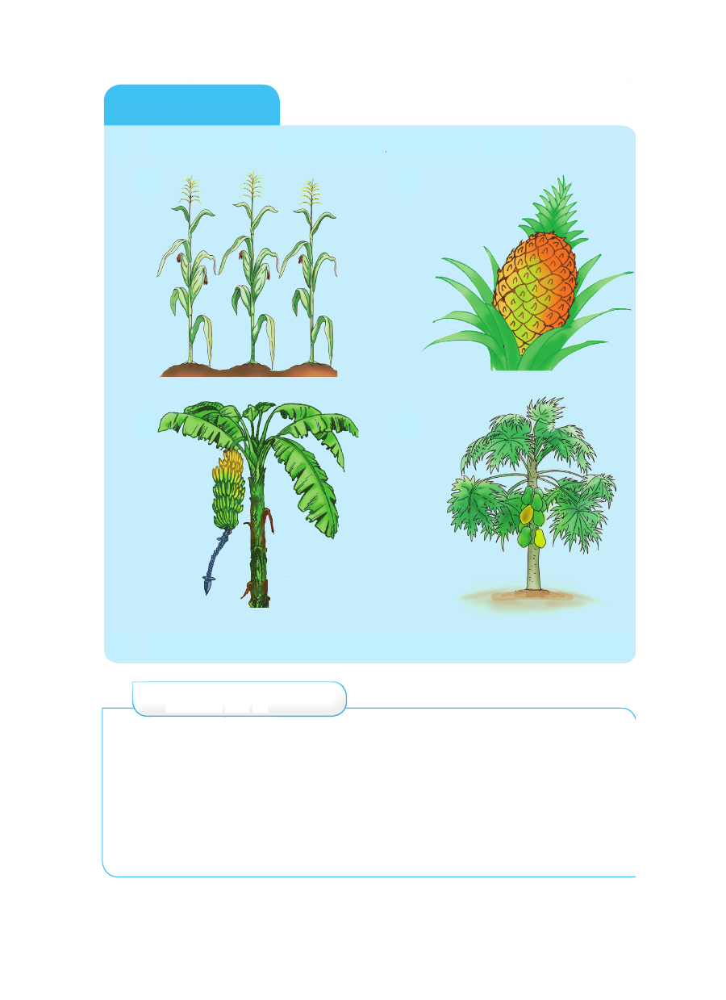

Kazi ya kufanya
1. Angalia picha, kisha andika jina la kila mmea.
1. 2.
3. 4.
2. Andika majina ya mimea mingine mitano unayoifahamu.
Zoezi la 2
Jibu maswali haya.
1. Viumbe hai wapo katika makundi mangapi? Yataje.
2. Mimea ina faida gani?
3. Taja mimea inayopatikana kwenye mazingira ya shule
yako.
4. Taja mimea minne inayotoa matunda.
Kazi ya kufanya 1. Angalia picha, kisha andika jina la kila mmea. 1. 2. 3. 4. 2. Andika majina ya mimea mingine mitano unayoifahamu. Zoezi la 2 Jibu maswali haya. 1. Viumbe hai wapo katika makundi mangapi? Yataje. 2. Mimea ina faida gani? 3. Taja mimea inayopatikana kwenye mazingira ya shule yako. 4. Taja mimea minne inayotoa matunda.